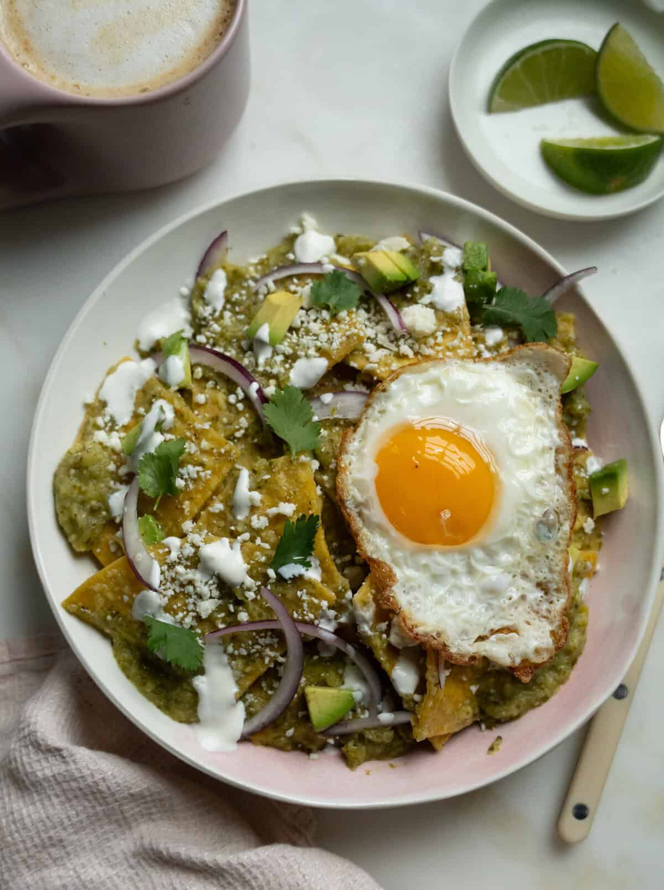
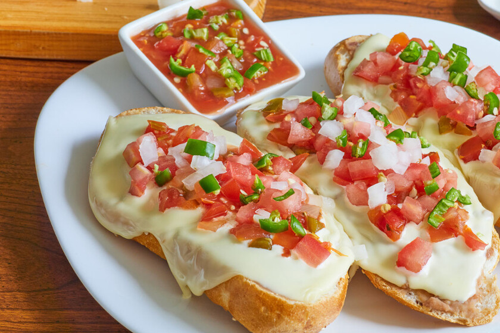

Ingredientes
2 huevos
Jamón picado
Queso rallado
Sal y pimienta
Aceite o mantequilla
Instrucciones
1-Bate los huevos.
2-Agrega sal y pimienta.
3-Calienta el sartén con mantequilla.
4-Vierte los huevos.
5-Añade jamón y queso.
6-Dobla el omelette.
7-Cocina 1 minuto más.
8-Sirve caliente.
Chilaquiles Verdes

Ingredientes
Totopos
Salsa verde
Crema
Queso fresco
1 huevo
Instrucciones
1- Calienta la salsa verde.
2- Agrega los totopos.
3- Mezcla rápidamente.
4- Fríe un huevo aparte.
5- Sirve los chilaquiles.
6- Añade crema y queso.
7- Coloca el huevo encima.
Disfruta caliente.
Molletes

Ingredientes
Bolillo
Frijoles refritos
Queso manchego
Pico de gallo
Instrucciones
1-Parte el bolillo a la mitad.
2-Unta frijoles.
3-Agrega queso.
4-Mete al horno.
5-Espera a que se derrita.
6-Saca del horno.
7-Añade pico de gallo.
8-Sirve caliente.
Huevos a la Mexicana
Ingredientes
2 huevos
Tomate
Cebolla
Chile
Aceite
Instrucciones
1- Pica las verduras.
2- Sofríelas en aceite.
3- Bate los huevos.
4- Agrégalos al sartén.
5- Revuelve constantemente.
6- Cocina hasta que estén listos.
7- Sirve con tortillas.
8- Disfruta caliente.
Quesadillas

Ingredientes
tortillas
queso monterrey
Instrucciones
Calienta el sartén.
Coloca una tortilla.
Agrega queso.
Dobla la tortilla.
Cocina ambos lados.
Espera a que el queso se derrita.
Retira del sartén.
Sirve caliente.